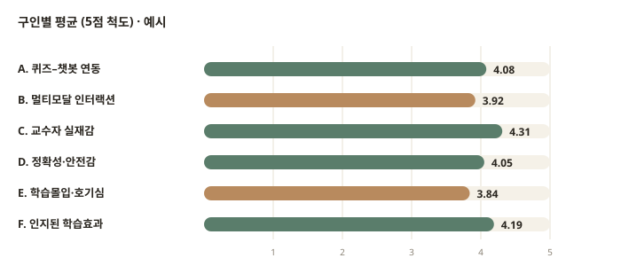
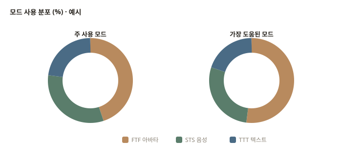
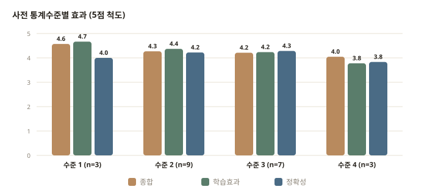
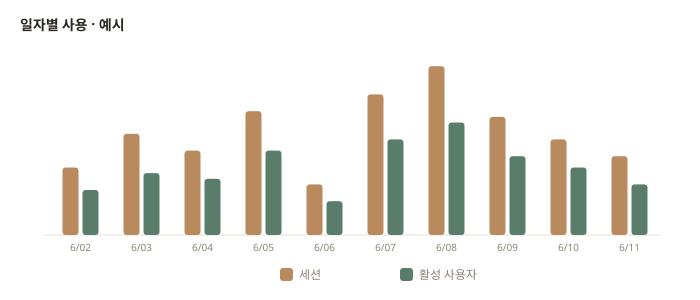
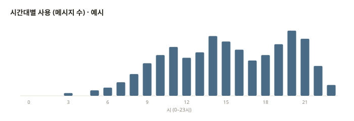

경영통계 교육봇
학습자 인식 대시보드 종합 보고서
AI 챗봇 기반 경영통계 교육봇의 학습자 인식 설문·사용 통계 대시보드(v2_edu)가 측정·시각화하는 모든 내용을 그림과 표로 빠짐없이 정리한 보고서입니다. 측정 모형(6구인·14문항), 멀티모달 인터랙션, 분석 항목, 시스템·데이터 구조를 차례로 설명합니다.
한눈에 보는 요약
- 목적: 경영통계 교육봇을 사용한 학습자의 인식을 6개 구인·14개 문항(5점 리커트)으로 측정하고, 사용 통계와 함께 실시간 집계.
- 핵심 지표(KPI): 설문 응답 수, 평균 응답시간(초), 평균 종합점수(/5), 대화 세션·사용자 수.
- 멀티모달: FTF(아바타)·STS(음성)·TTT(텍스트) 세 모드의 주 사용 / 가장 도움된 모드 분포 비교.
- 분석: 구인·문항별 평균, 모드 분포, 사전 통계수준별 효과, 인구통계(학년·성별·전공), 자유응답, 일자·시간대별 사용.
- 구조: 대시보드(Vercel) → statistics-api(aiforalab.com) → cha_statistics_db 스키마.
개요와 시스템 흐름
Overview경영통계 교육봇은 경영통계 수업을 돕는 AI 챗봇으로, 디지털 휴먼 아바타·음성·텍스트의 세 가지 방식으로 학습자와 상호작용합니다. 본 대시보드(v2_edu)는 학습자가 교육봇을 사용한 뒤 작성한 인식 설문과, 실제 사용 로그를 한곳에 모아 교수자가 학습 효과와 사용 패턴을 한눈에 파악하도록 설계되었습니다.
데이터는 다음 흐름으로 수집·집계·시각화됩니다. 대시보드는 토큰 인증으로 API를 호출하여 두 종류의 요약(usage_summary, survey_summary_v2_edu)을 받아 차트로 렌더링합니다.
핵심 지표 (KPI)
Overview KPIs대시보드 최상단에는 전체 현황을 요약하는 4개의 핵심 지표가 표시됩니다. 각 지표의 의미·단위·출처는 다음과 같습니다.
| 지표 | 설명 | 단위 | 출처 필드 |
|---|---|---|---|
| 설문 응답 | 제출된 설문 총건수와 유효 응답 건수 | 건 | totals.total / totals.valid |
| 평균 응답시간 | 설문 작성에 걸린 평균 소요 시간 | 초 | totals.avg_duration_sec |
| 평균 종합점수 | 전체 종합 인식 점수의 평균 | /5 | overall_stats.mean |
| 대화 세션 | 누적 대화 세션 수와 고유 사용자 수 | 건/명 | totals.sessions_total / users_total |
측정 모형 : 6개 구인 · 14개 문항
Measurement Model학습자 인식은 6개의 구인(construct)으로 구성되며, 각 구인은 1~4개의 문항(item)으로 측정됩니다. 모든 문항은 5점 리커트 척도(1=전혀 그렇지 않다 ~ 5=매우 그렇다)입니다. 구인과 문항의 대응 관계는 그림 2와 같습니다.
A. 퀴즈–챗봇 연동
- Q1퀴즈 즉시 질문
- Q2챗봇 풀이 도움
B. 멀티모달 인터랙션
- Q3모드 전환 가능
C. 교수자 실재감
- Q4교수자 실재감
- Q5부담 없는 분위기
- Q6강의자료 일관성
D. 정확성·안전감
- Q7답변 정확성
- Q8한계 솔직히 인정
E. 학습몰입·호기심
- Q9시간 빠르게 감
- Q10호기심 생김
F. 인지된 학습효과
- Q11개념 이해
- Q12자신감 생김
- Q13재사용 의사
- Q14전반 도움
| 변수명 | 구인 | 영문 개념 | 문항 수 | 포함 문항 |
|---|---|---|---|---|
| A_quiz | A. 퀴즈–챗봇 연동 | 퀴즈 연동형 novelty | 2 | Q1, Q2 |
| B_multimodal | B. 멀티모달 인터랙션 | 모드 전환 | 1 | Q3 |
| C_presence | C. 교수자 실재감 | Teacher Presence | 3 | Q4, Q5, Q6 |
| D_accuracy | D. 정확성·안전감 | Trust | 2 | Q7, Q8 |
| E_flow | E. 학습몰입·호기심 | Flow | 2 | Q9, Q10 |
| F_learning | F. 인지된 학습효과 | Perceived Learning | 4 | Q11, Q12, Q13, Q14 |
대시보드는 각 구인의 평균을 가로 막대로 보여줍니다(4.0 이상은 녹색, 3.0 미만은 적색으로 강조). 다음은 표시 형태를 보여주는 예시입니다.

문항 전체 목록
14개 문항 각각의 코드·내용·소속 구인·내부 변수명은 표 3과 같습니다. 대시보드는 문항별로 평균(M)·표준편차(SD)·응답수(n)를 표로 제공합니다.
| 코드 | 문항 내용 | 구인 | 내부 변수명 |
|---|---|---|---|
| Q1 | 퀴즈 즉시 질문 | A | q_quiz_link |
| Q2 | 챗봇 풀이 도움 | A | q_quiz_explain |
| Q3 | 모드 전환 가능 | B | q_mode_switch |
| Q4 | 교수자 실재감 | C | q_teacher_presence |
| Q5 | 부담 없는 분위기 | C | q_warm_atmosphere |
| Q6 | 강의자료 일관성 | C | q_consistent_explain |
| Q7 | 답변 정확성 | D | q_accuracy |
| Q8 | 한계 솔직히 인정 | D | q_limit_admit |
| Q9 | 시간 빠르게 감 | E | q_flow |
| Q10 | 호기심 생김 | E | q_curiosity |
| Q11 | 개념 이해 | F | q_understanding |
| Q12 | 자신감 생김 | F | q_confidence |
| Q13 | 재사용 의사 | F | q_will_reuse |
| Q14 | 전반 도움 | F | q_overall |
인터랙션 모드
Multimodal Interaction학습자는 동일한 교육봇을 세 가지 모드로 사용할 수 있습니다. 각 모드의 정의와 대시보드 색상은 표 4와 같습니다.
| 코드 | 명칭 | 방식 | 설명 |
|---|---|---|---|
| FTF | 아바타 | Face-to-Face | 디지털 휴먼 아바타와 마주 보며 대화 — 가장 몰입도 높은 모드 |
| STS | 음성 | Speech-to-Speech | 음성으로 질문하고 음성으로 답을 듣는 핸즈프리 대화 |
| TTT | 텍스트 | Text-to-Text | 채팅으로 입력하고 텍스트로 답을 받는 기본 모드 |
대시보드는 주 사용 모드와 가장 도움된 모드를 각각 도넛 차트로 비교하여, 학습자가 실제로 많이 쓴 방식과 가장 효과를 느낀 방식의 차이를 보여줍니다.

분석 항목
Breakdowns & Usage대시보드는 위 지표들을 다양한 기준으로 세분화하여 보여줍니다. 분석 항목 전체 목록은 표 5와 같습니다.
| 항목 | 형태 | 설명 |
|---|---|---|
| 구인별 평균 | 가로 막대 | 6개 구인의 평균과 응답수(n) |
| 문항별 평균 | 표 | 14개 문항의 M · SD · n |
| 주 사용 모드 | 도넛 | FTF/STS/TTT 사용 비중 |
| 가장 도움된 모드 | 도넛 | FTF/STS/TTT 효과 비중 |
| 사전 통계수준별 효과 | 그룹 막대 | 사전 지식 레벨별 종합·학습효과·정확성 |
| 인구통계 | 표 | 학년 · 성별 · 전공(상위 10) |
| 자유응답 | 리스트 | 최신 20건의 도움된 점 / 개선 의견 |
| 일자별 채팅 | 막대 | 세션 · 활성 사용자 추이 |
| 시간대별 사용 | 막대 | 0–23시 메시지 분포 |
사전 통계수준별 효과
학습자의 사전 통계 지식 수준별로 종합 점수·학습효과·정확성을 비교하여, 교육봇이 어떤 집단에 더 효과적인지 파악합니다.

인구통계
응답자 구성을 학년·성별·전공으로 나누어 표로 제공합니다(전공은 상위 10개). 표 6은 분류 항목과 표시 예시입니다.
| 분류 | 구분 | 예시 응답수 |
|---|---|---|
| 학년 grade | 1학년 | — |
| 2학년 | — | |
| 3학년 | — | |
| 4학년 | — | |
| 성별 gender | 남 / 여 | — |
| 응답 안 함 | — | |
| 전공 major | 상위 10개 전공 | — |
자유응답
객관식 외에 학습자가 직접 작성한 의견을 최신 20건까지 보여줍니다. 각 응답은 도움(도움된 점, free_helpful) 또는 개선(개선 의견, free_improvement)으로 구분되며, 작성 시각과 해당 응답의 종합점수가 함께 표시됩니다.
사용 통계
설문과 별개로, 교육봇의 실제 사용 로그를 일자별·시간대별로 집계합니다.


시스템·데이터 구조
Architecture & Data대시보드는 정적 클라이언트로서, 토큰 인증 헤더(X-Dashboard-Token)와 함께 API를 호출하여 두 가지 요약 데이터를 받습니다. API 액션은 표 7과 같습니다.
| action | 내용 | 주요 반환 |
|---|---|---|
| usage_summary | 사용 통계 요약 | totals, activity[], hourly[] |
| survey_summary_v2_edu | 설문 인식 요약 | totals, overall_stats, construct_stats, item_stats, modes, by_prior_level, demographics, free_responses |
엔드포인트: POST /api/school-api?action=… · 인증: 세션 스토리지에 저장된 대시보드 토큰 · 차트 라이브러리: Chart.js 4.4 · 호스팅: Vercel.
API가 반환하는 주요 데이터 필드(스키마)의 의미는 표 8과 같습니다.
| 필드 | 구조 | 설명 |
|---|---|---|
| usage_summary | ||
| totals.sessions_total / users_total | 정수 | 누적 세션 수 / 고유 사용자 수 |
| activity[] | {d, sessions, active_users} | 일자별 세션·활성 사용자 |
| hourly[] | {h, n} | 시간대(0–23)별 메시지 수 |
| as_of | 일시 | 집계 기준 시각(업데이트 표시) |
| survey_summary_v2_edu | ||
| totals | {total, valid, avg_duration_sec} | 응답 총·유효 건수, 평균 소요시간 |
| overall_stats.mean | 실수 | 종합 점수 평균(/5) |
| construct_stats[key] | {mean, n} | 구인별 평균·응답수 |
| item_stats[key] | {mean, sd, n} | 문항별 평균·표준편차·응답수 |
| modes.primary / helpful | [{mode, cnt}] | 주 사용 / 가장 도움된 모드 분포 |
| by_prior_level[] | {level, n, overall, learning, accuracy} | 사전 통계수준별 효과 |
| demographics | {grade[], gender[], major[]} | 학년·성별·전공 분포 |
| free_responses[] | {free_helpful, free_improvement, overall_score, submitted_at} | 자유응답(최신 20) |